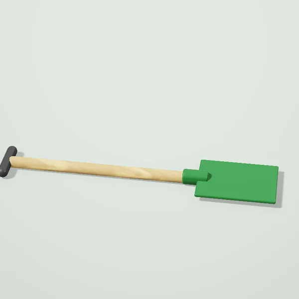
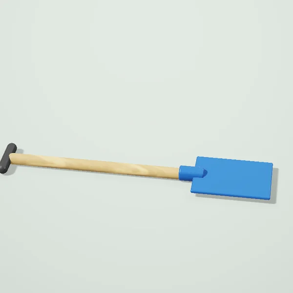
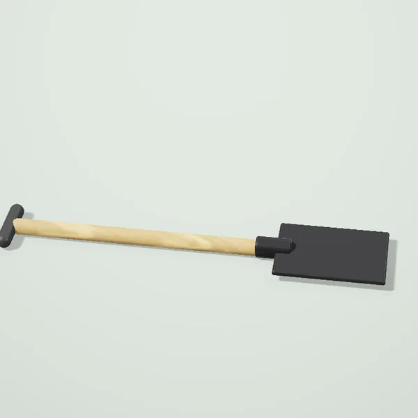
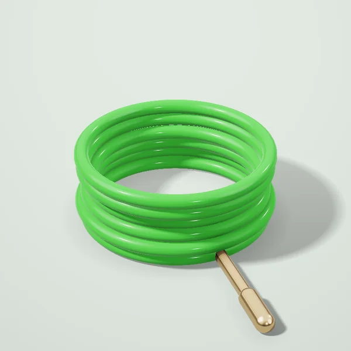
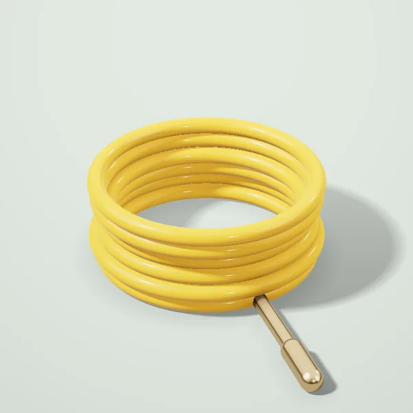
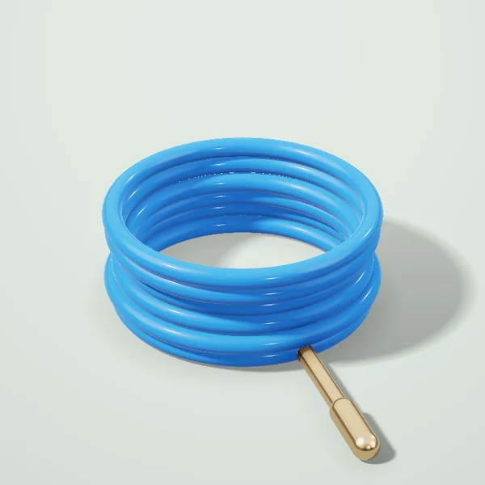
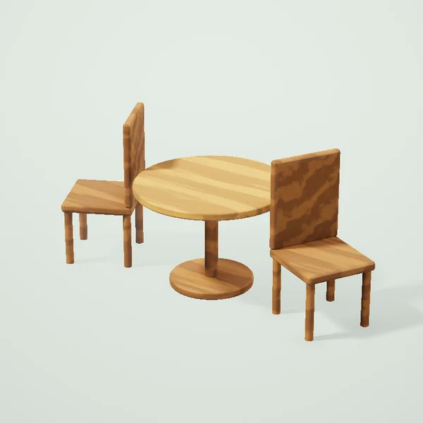
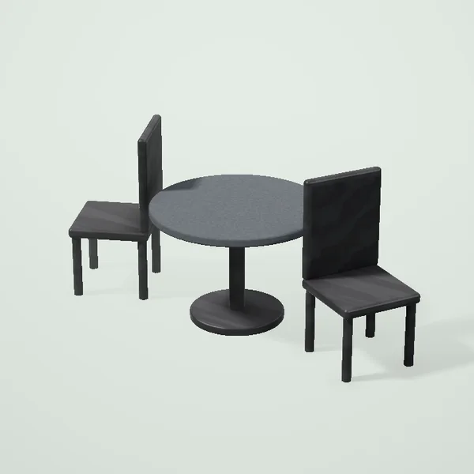

Boğ va hovli Toşkentda
Boğ asboblari

Bel kurak75 000 sömdan
Kurak (çömiç)79 000 sömdan
Kuçaytirilgan bel kurak105 000 sömdan
Suğoriş

Boğ şlangi ¾″, 20 m135 000 sömdan
Boğ şlangi ½″, 25 m121 500 sömdan
Boğ şlangi ¾″, 50 m291 000 sömdan
Boğ mebeli

Boğ mebeli: stol va 4 kreslo2 650 000 sömdan
Rotang boğ mebeli, grafit3 710 000 sömdan